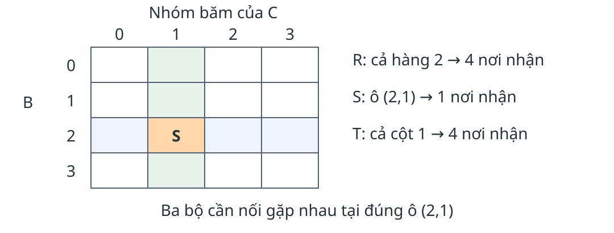

2.2 · Mô hình MapReduce
Đầu vào Kho tài liệu được chia trên nhiều máy.
Đầu ra Mỗi từ đã xuất hiện đi kèm tổng số lần xuất hiện.
Map phát đóng góp → hệ thống nhóm theo khóa → reduce tổng hợp.
Với kho lớn, giữ và xử lý tất cả trên một máy có thể không phù hợp. Ta bắt đầu bằng đếm từ để thấy từng đóng góp. Đơn vị đếm của ví dụ tiếng Việt là chuỗi tách theo khoảng trắng; đó không phải bài toán phân tích từ vựng. Người dùng viết map và reduce, còn hệ thống bảo đảm nhóm đúng khóa.
Nguồn: MMDS, Chương 2, 2.2.1–2.2.3, Ví dụ 2.1–2.2, trang in 25–27.
Mỗi lần xuất hiện tạo một đóng góp
Tài liệu Cặp map phát dữ liệu lớn (dữ,1), (liệu,1), (lớn,1) lớn lớn (lớn,1), (lớn,1)
Câu hỏi: Từ “lớn” tạo bao nhiêu cặp trước khi nhóm?
Ví dụ cụ thể hóa cơ chế của Ví dụ 2.1 bằng hai chuỗi đã tách theo khoảng trắng. Có năm đơn vị đếm và năm cặp, trong đó ba cặp mang khóa lớn. Các cặp trùng nhau phải được giữ vì mỗi cặp biểu diễn một lần xuất hiện. Đáp án câu hỏi là ba, không phải hai tài liệu. Bước kế tiếp chỉ đổi cách nhóm, chưa làm mất đóng góp.
Nguồn: MMDS, Chương 2, Ví dụ 2.1, trang in 26; dữ liệu minh họa tiếng Việt được ghi trong storyboard.
Nhóm theo khóa rồi cộng
Khóa Giá trị nhận được Kết quả dữ [1] (dữ,1) liệu [1] (liệu,1) lớn [1,1,1] (lớn,3)
Mọi đóng góp của một từ về cùng một nhóm.
Nhóm theo khóa do hệ thống thực hiện. Reduce được gọi cho một khóa và danh sách các giá trị của khóa đó, không phải cho từng tài liệu. Với khóa lớn, tổng đi qua 0,1,2,3. Thứ tự các số 1 không làm đổi kết quả cộng. Hỏi sinh viên chỉ ra điều gì sẽ sai nếu một cặp lớn bị đưa sang nhóm khác: kết quả thiếu đóng góp.
Nguồn: MMDS, Chương 2, 2.2.2–2.2.3, Ví dụ 2.2, trang in 26–27.
Thuật toán đếm từ và tính đúng
map(tài_liệu):
với mỗi từ w:
phát(w, 1)reduce(w, V):
s ← 0
với mỗi v trong V: s ← s + v
phát(w, s)Mỗi lần xuất hiện tạo đúng một số 1; sau $j$ bước, $s$ bằng tổng $j$ giá trị đầu.
Mệnh đề: với tách từ xác định, bộ đếm không tràn và bảo đảm nhóm đúng, đầu ra đếm đúng mọi từ xuất hiện. Map tạo đúng một cặp cho từng lần xuất hiện. Nhóm chứa mọi và chỉ đóng góp của từ đang xét. Cơ sở bất biến: tổng rỗng bằng 0. Duy trì: thêm đúng giá trị tiếp theo. Khi danh sách hữu hạn kết thúc, s bằng số lần xuất hiện của từ. Map dừng vì mỗi tài liệu hữu hạn. Kho rỗng cho đầu ra rỗng. Reduce đọc tuần tự cần một biến tổng; thời gian tuyến tính theo số giá trị nhận, theo mô hình số học đơn vị. Tràn bộ đếm và phân tích tách từ nằm ngoài giả mã này.
Nguồn: MMDS, Chương 2, 2.2.1–2.2.3, trang in 25–27; lập luận đúng từ Ví dụ 2.1–2.2.
Gộp cục bộ trước khi truyền
Chưa gộp D2 phát:
(lớn,1), (lớn,1)
Toàn ví dụ: 5 cặp → 4 cặp. Kết quả cuối vẫn là (lớn,3).
Bộ kết hợp là phép tổng hợp cục bộ trước khi gửi trung gian. Với phép cộng, kết hợp và giao hoán cho phép cộng các tổng nhóm theo bất kỳ thứ tự; trạng thái vẫn biểu diễn cùng số lần xuất hiện. Bộ kết hợp có thể không được chạy, nên reduce cuối vẫn phải xử lý đúng các giá trị nhận được. Không thay cộng bằng max dù max cũng kết hợp/giao hoán: như vậy đổi ý nghĩa bài toán. Trung bình cục bộ cần giữ cả tổng và số lượng. Giảm số cặp chưa phải một tỷ lệ giảm byte đã đo.
Nguồn: MMDS, Chương 2, 2.2.4, trang in 27–28.
Khóa, tác vụ và máy
Cấp Vai trò Một reducer Một lần gọi reduce cho một khóa Một Reduce task Đơn vị lập lịch, xử lý nhiều khóa Một máy Có thể chạy nhiều tác vụ
Câu hỏi: Một khóa có danh sách rất dài có tự được chia nhỏ khi tăng số tác vụ?
Đáp án: không, nếu giữ thuật toán nhóm theo khóa hiện tại. Mọi giá trị của khóa vẫn thuộc một reducer. Phải phân biệt gom nhiều reducer vào ít tác vụ để trung bình hóa tải theo khóa với tạo nhiều tác vụ hơn số máy để lập lịch linh hoạt. Từ phổ biến tạo danh sách dài; bộ kết hợp có thể rút ngắn danh sách ấy. Sách bàn hai cơ chế trong khung ở trang 28 và phần thực thi, không bảo đảm tăng số task luôn xử lý được lệch tải.
Nguồn: MMDS, Chương 2, Khung reducer/tác vụ/máy, trang in 28; 2.2.5.
Lưu trữ quyết định phần cần chạy lại
Điểm hỏng Phần cần xử lý lại Máy map Map task đang chạy và đã xong nếu trung gian cục bộ bị mất Máy reduce Reduce task đang chạy trên máy hỏng
Đầu vào và kết quả cuối nằm trên hệ tệp phân tán; trung gian MapReduce nằm cục bộ.
Bộ điều phối giữ trạng thái chờ, đang chạy, đã hoàn thành. Khi map worker mất, các tệp trung gian ở máy đó mất nên cả map task đã hoàn thành có thể phải chạy lại; thông báo vị trí mới cho reduce. Khi reduce worker mất, chỉ tác vụ đang chạy được đặt về chờ theo mô hình sách. Đầu ra đã hoàn tất nằm trên hệ tệp phân tán. Chạy lại phải tái tạo cùng kết quả logic và không làm hiệu ứng ngoài bị nhân đôi. Sách mô tả lỗi bộ điều phối là trường hợp có thể phải khởi động lại công việc, không được hiểu hệ thống chịu được mọi dạng lỗi.
Nguồn: MMDS, Chương 2, 2.2.5–2.2.6, trang in 28–30.
Bài tập 2.2.1(a) · Lệch tải khi chưa gộp
Kho tài liệu rất lớn, chẳng hạn một bản sao Web; đếm từ bằng 100 tác vụ Map.
Câu hỏi: Không dùng bộ kết hợp. Thời gian xử lý danh sách của các reducer có lệch đáng kể không? Giải thích.
Sản phẩm: giải thích bằng độ dài danh sách và cách gán khóa.
Có thể lệch đáng kể: số lần xuất hiện của từng từ khác nhau nhiều, reducer của từ thường gặp phải đọc danh sách dài. Đây là nhận định theo phân bố từ tự nhiên, không là định lý mọi tập dữ liệu đều lệch. Phân biệt reducer theo khóa với Reduce task.
Nguồn: MMDS, Chương 2, Bài tập 2.2.1(a), trang in 30 / PDF 11.
Bài tập 2.2.1(b) · Gom reducer vào tác vụ
Kho tài liệu rất lớn, chẳng hạn một bản sao Web; đếm từ bằng 100 tác vụ Map.
Câu hỏi: Gán ngẫu nhiên các reducer vào 10 tác vụ Reduce. So sánh mức lệch với cách gán vào 10000 tác vụ Reduce.
Sản phẩm: giải thích bằng độ dài danh sách và cách gán khóa.
Với 10 tác vụ, mỗi tác vụ thường nhận nhiều khóa nên tổng tải có xu hướng được san đều hơn. Với 10000 tác vụ, ít khóa mỗi tác vụ hơn nên từ phổ biến có thể chi phối một tác vụ. Không bảo đảm 10 tác vụ luôn cân bằng: một khóa cực lớn vẫn có thể gây lệch; gán ngẫu nhiên không chia nhỏ chính khóa ấy. Không suy ra 10000 tác vụ luôn chạy chậm hơn vì còn lịch và số máy.
Nguồn: MMDS, Chương 2, Bài tập 2.2.1(b), trang in 30 / PDF 11.
Bài tập 2.2.1(c) · Tác động của bộ kết hợp
Kho tài liệu rất lớn, chẳng hạn một bản sao Web; đếm từ bằng 100 tác vụ Map.
Câu hỏi: Dùng bộ kết hợp tại cả 100 tác vụ Map. Mức lệch có còn đáng kể không? Giải thích.
Sản phẩm: giải thích bằng độ dài danh sách và cách gán khóa.
Tiếp: bài tập thiết kế thuật toán
Nếu mỗi Map task gộp toàn bộ các lần xuất hiện của từng từ thành một tổng, mỗi từ gửi tối đa 100 tổng sang reduce. Danh sách từ phổ biến ngắn đi rất nhiều, nên mức lệch thời gian reduce giảm. Đây là mô hình gộp theo tác vụ của bài tập; triển khai có thể chạy bộ kết hợp nhiều lần trên nhiều mảnh nên không mặc định cận 100 cho mọi triển khai. Từ hiếm vẫn có danh sách ngắn hơn và Map vẫn có thể lệch tải.
Nguồn: MMDS, Chương 2, Bài tập 2.2.1(c), trang in 30 / PDF 11.
2.3 · Nhân ma trận–vector
$x_i=\sum_{j=1}^{n}m_{ij}v_j$
$M$: ma trận $n \times n$.
$v$: vector độ dài $n$.
Ma trận lưu các bộ $(i,j,m_{ij})$.
Cần một tổng cho mỗi hàng $i$.
Tình huống nguồn là tính toán trên ma trận rất lớn, chẳng hạn ma trận liên kết Web; ma trận thường thưa. Không cần tải ma trận đặc lên một máy. Khôi phục ý nghĩa nhân hàng với vector trước khi bàn MapReduce: thành phần i là tổng các tích có cùng chỉ số hàng i. Phân biệt chỉ số hàng i và cột j. Với dữ liệu nhỏ vừa một máy, nguồn lưu ý không cần MapReduce. Dùng chính công thức nguồn, không thêm ma trận số ngoài tài liệu.
Nguồn: MMDS, Chương 2, 2.3.1, trang in 31–32.
Khóa hàng gom đúng các tích
Phần tử Map phát $(i,1,m_{i1})$ $(i,m_{i1}v_1)$ $(i,2,m_{i2})$ $(i,m_{i2}v_2)$ $\ldots$ $\ldots$
map(i,j,m): phát(i, m × v[j])
reduce(i,V): phát(i, tổng(V))Trước map, mỗi tác vụ cần vector v có sẵn trong bộ nhớ. Mỗi phần tử ma trận tạo đúng tích cần thiết và mang khóa hàng i. Reduce cộng toàn bộ tích của hàng, nên trả x_i. Nếu lưu thưa, các phần tử không lưu được hiểu bằng 0; hàng không phát cặp cũng phải được hiểu là kết quả 0 hoặc được bổ sung theo quy ước đầu ra. Các vòng duyệt hữu hạn nên dừng. Thời gian map tuyến tính theo số phần tử lưu, chưa tính đọc v và nhóm; reduce tuyến tính theo số tích nhận. Số học dấu phẩy động có thể làm tổng khác một ít theo thứ tự cộng: lập luận đại số xét số thực chính xác.
Nguồn: MMDS, Chương 2, 2.3.1, trang in 31–32.
Chia dải khi vector không vừa bộ nhớ
Mỗi map task nhận một phần của dải ma trận và đọc toàn bộ dải vector tương ứng. Chọn số dải để phần vector cần dùng vừa bộ nhớ. Khóa kết quả vẫn là hàng i, do đó các đóng góp từ những dải khác nhau vẫn cộng về cùng thành phần x_i. Không nhầm chia dải với bỏ các tích ở dải khác. Chi phí đọc vector có thể lặp giữa tác vụ; phần bài tập chi phí yêu cầu ghi rõ số lần đọc. Sách dùng năm dải để minh họa, không khẳng định năm luôn đủ.
Nguồn: MMDS, Chương 2, 2.3.2, Hình 2.4, trang in 32.
Một quan hệ là một bảng dữ liệu
From To url1 url2 url1 url3 url2 url3 url2 url4
Links(From, To)
Mỗi hàng là một cạnh có hướng.
Tên các cột tạo thành lược đồ của quan hệ.
Đây là bốn hàng được trích trong Hình 2.5, không phải toàn bộ Web. Một bộ là một hàng, một thuộc tính là một cột. Cặp url1,url2 cho biết có liên kết từ url1 sang url2. Trong các phép toán dưới đây quan hệ theo ngữ nghĩa tập hợp: không có nhiều bản giống hệt cùng một bộ trong một quan hệ. Không giả định đã học SQL; ta sẽ hiểu thao tác trên bảng trước ký hiệu đại số.
Nguồn: MMDS, Chương 2, 2.3.3, Hình 2.5, Ví dụ 2.3, trang in 33–34.
Phép chọn giữ các hàng thỏa điều kiện
Điều kiện: From = url1
Hàng Kết quả (url1,url2) Giữ (url2,url3) Bỏ
map(t):
nếu C(t) đúng: phát(t,t)
reduce(t,V): phát(t,t)$\sigma_C(R)=\{t\in R:C(t)\}$
Câu hỏi: Phép chọn thay đổi hàng hay cột?
Đáp án: giữ một số hàng và giữ lược đồ cột. Mỗi bộ đi qua một kiểm tra C. Nếu điều kiện đúng, map phát bộ; nếu sai không phát gì. Reduce giữ nguyên bộ theo đặc tả quan hệ dạng tập hợp. Tính đúng: mọi đầu ra thỏa C; mọi đầu vào thỏa C đều được giữ. Dừng sau số bộ hữu hạn; thời gian kiểm tra tuyến tính theo số bộ nếu đánh giá C mất thời gian hằng. Hai hàng lấy từ phần trích Links ở Hình 2.5; điều kiện From=url1 là áp dụng định nghĩa phép chọn của nguồn để chạy tay. Các cột không thay đổi.
Nguồn: MMDS, Chương 2, 2.3.4, trang in 35.
Phép chiếu giữ cột và loại bản sao
Bộ (From, To) Cột From (url1, url2) url1 (url1, url3) url1 (url2, url3) url2 (url2, url4) url2
Bốn giá trị → hai giá trị phân biệt: url1, url2 .
map(t):
t′ ← các cột cần giữ của t
phát(t′, t′)
reduce(t′,V): phát(t′, t′)Đây là áp dụng thuật toán nguồn (2.3.5) lên phần trích Hình 2.5, không phải câu ví dụ trích nguyên văn từ sách. Chiếu cột From trên bốn hàng cho bốn giá trị url1,url1,url2,url2. Mọi bộ chiếu về cùng khóa; reduce phát đúng một lần cho mỗi khóa, nên chỉ còn hai giá trị phân biệt url1,url2. Số hàng và danh sách giá trị hữu hạn nên vòng lặp dừng; mỗi đầu vào tạo một cặp, chi phí cục bộ tuyến tính với số cột cố định, còn nhóm có chi phí hệ thống.
Nguồn: MMDS, Chương 2, 2.3.5, trang in 35–36; phần trích Hình 2.5.
Hai cạnh nối qua cùng đỉnh giữa
$R(A,B)\bowtie S(B,C)$
Bộ đầu vào Cặp map phát $(a,b)\in R$ $(b,(R,a))$ $(b,c)\in S$ $(b,(S,c))$
reduce(b,V):
A ← các a có nhãn R; C ← các c có nhãn S
với mỗi a trong A và c trong C: phát(b,(a,b,c))Bài toán nguồn là tìm đường đi dài hai trong kho liên kết lớn. Một cạnh kết thúc ở b chỉ ghép với cạnh bắt đầu ở b. Trước công thức, chạy cặp url1→url2 và url2→url3: đỉnh giữa url2 quyết định khóa. Nhãn nguồn giúp reducer phân biệt hai phía; R và S trong giá trị là nhãn, không phải toàn quan hệ. Với mỗi khóa, phải ghép mọi cặp một từ mỗi phía. Nếu một phía rỗng thì không phát. Các vòng lặp hữu hạn nên dừng; thời gian tạo kết quả phụ thuộc tích hai độ dài nhóm. Khóa của cặp đầu ra không ảnh hưởng kết quả nối; bộ giá trị (a,b,c) vẫn phải giữ thuộc tính chung b, theo mục 2.3.7.
Nguồn: MMDS, Chương 2, 2.3.7 và Ví dụ 2.4, trang in 35,37.
Vết nối trên bốn hàng Links
Khóa giữa Từ $L_1$ Từ $L_2$ url1 — url2, url3 url2 url1 url3, url4 url3 url1, url2 — url4 url2 —
Kết quả: (url1,url2,url3) , (url1,url2,url4) .
L1(U1,U2) và L2(U2,U3) là hai bản sao của bốn hàng Links. Cạnh (url1,url2) ở L1 phát (url2,(L1,url1)); ở L2 phát (url1,(L2,url2)). Chỉ khóa url2 có dữ liệu từ cả hai phía. Ghép url1 với url3 và url4 tạo đúng hai bộ đã nêu. Đây chỉ là kết quả trên phần trích. Tính đúng có hai chiều: mỗi kết quả nối chứa hai cạnh chung đỉnh giữa; mọi cặp cạnh như vậy gặp ở đúng khóa chung. Không phát đường url1→url1 vì không có cạnh vào url1 trong phần trích. Yêu cầu sinh viên giải thích vì sao khóa url3 không phát kết quả.
Nguồn: MMDS, Chương 2, Hình 2.5, Ví dụ 2.4 và 2.3.7, trang in 33,35,37.
Nhóm theo người dùng rồi tổng hợp
Friends(User, Friend)
Gom các hàng có cùng User.
Ví dụ sách: (Sally, 300).
map(user,friend): phát(user, 1)
reduce(user,V): phát(user, tổng(V))COUNT đếm hàng; SUM cộng giá trị; AVG cần tổng và số lượng.
Ví dụ 2.5 cho kết quả Sally có 300 bạn nhưng không cung cấp danh sách 300 tên để chạy số từng dòng. Ta biểu diễn danh sách đóng góp của Sally bằng các số 1 rồi dùng COUNT. Đây là cụ thể hóa COUNT của cơ chế nhóm và tổng hợp 2.3.8; với SUM map giữ giá trị cần cộng thay vì 1. Tính đúng do mọi hàng cùng người dùng thuộc cùng nhóm. Nhóm rỗng không xuất hiện ở đầu ra của quy ước quan hệ. Reduce tổng đọc tuần tự cần một bộ đếm, không phải toàn danh sách; chi phí truyền sẽ được tính ở phần sau.
Nguồn: MMDS, Chương 2, 2.3.8 và Ví dụ 2.5, trang in 35,38.
Nhân ma trận là nối rồi cộng
$p_{ik}=\sum_j m_{ij}n_{jk}$
Công việc Khóa Kết quả 1 · Ghép phần tử $j$ $((i,k),m_{ij}n_{jk})$ 2 · Cộng các tích $(i,k)$ $((i,k),p_{ik})$
Biến thể một công việc phát lại phần tử tới các khóa $(i,k)$ cần nó.
Điều kiện nhân: số cột ma trận M bằng số hàng N. Mỗi chỉ số j nối hai phần tử cần nhân; sau đó các tích được gom theo ô kết quả. Đây là trang liên hệ kiến thức đã học, không thay một phần giảng đầy đủ về hai biến thể. Chi tiết giả mã của 2.3.9–2.3.10 và phép hợp/giao/hiệu 2.3.6 dành cho đọc thêm. Không kết luận một công việc luôn tốt hơn vì ít vòng: việc sao chép dữ liệu có thể tăng mạnh. Các bài tập bắt buộc bên dưới không đòi hỏi tự thiết kế biến thể nhân ma trận–ma trận.
Nguồn: MMDS, Chương 2, 2.3.9–2.3.10, trang in 38–40.
Bài tập 2.3.1(a) · Số nguyên lớn nhất
Đầu vào: một tệp số nguyên rất lớn. Khóa đầu ra có thể bị bỏ qua.
Câu hỏi: Thiết kế MapReduce để trả số nguyên lớn nhất.
Sản phẩm: map/reduce, trạng thái trung gian và lập luận đúng.
Map phát (0,x), reduce lấy max. Có thể gộp max cục bộ trước. Bất biến sau khi đọc j số: m là lớn nhất trong j số đã đọc. Khởi tạo từ phần tử đầu hoặc âm vô cùng; không dùng 0 vì dữ liệu có thể toàn số âm. Tệp rỗng cần báo không có kết quả. Đọc N số, O(N) công việc cộng dồn, O(1) trạng thái mỗi nhóm, N cặp nếu chưa gộp.
Nguồn: MMDS, Chương 2, Bài tập 2.3.1(a), trang in 40 / PDF 21.
Bài tập 2.3.1(b) · Trung bình các số nguyên
Đầu vào: một tệp số nguyên rất lớn. Khóa đầu ra có thể bị bỏ qua.
Câu hỏi: Thiết kế MapReduce để trả trung bình các số nguyên.
Sản phẩm: map/reduce, trạng thái trung gian và lập luận đúng.
Map phát (0,(x,1)); reduce cộng từng thành phần thành (S,N), xuất S/N nếu N>0. Bộ kết hợp cũng cộng hai thành phần, chưa chia. Bất biến S là tổng, N là số phần tử đã đọc. Trung bình của trung bình không đúng khi các nhóm có kích thước khác nhau. Tệp rỗng không có trung bình. O(N) công việc cộng dồn, trạng thái O(1) nếu số nguyên và bộ đếm có độ dài cố định trong mô hình.
Nguồn: MMDS, Chương 2, Bài tập 2.3.1(b), trang in 40 / PDF 21.
Bài tập 2.3.1(c) · Mỗi số chỉ xuất hiện một lần
Đầu vào: một tệp số nguyên rất lớn. Khóa đầu ra có thể bị bỏ qua.
Câu hỏi: Thiết kế MapReduce để trả mỗi số chỉ xuất hiện một lần.
Sản phẩm: map/reduce, trạng thái trung gian và lập luận đúng.
Map phát (x,1); reduce theo x phát (0,x) một lần. Mọi bản sao x cùng khóa nên không mất giá trị nào và không còn trùng ở đầu ra. Không cần giữ toàn bộ danh sách giá trị, chỉ nhận biết nhóm xuất hiện. Không bảo đảm thứ tự số trong tệp cuối. O(N) số cặp phát; chi phí nhóm do hệ thống xử lý, không bỏ qua nó khi phân tích cài đặt cụ thể.
Nguồn: MMDS, Chương 2, Bài tập 2.3.1(c), trang in 40 / PDF 21.
Bài tập 2.3.1(d) · Số lượng giá trị khác nhau
Đầu vào: một tệp số nguyên rất lớn. Khóa đầu ra có thể bị bỏ qua.
Câu hỏi: Thiết kế MapReduce để trả số lượng giá trị khác nhau.
Sản phẩm: map/reduce, trạng thái trung gian và lập luận đúng.
Tiếp: bài tập tính chi phí
Một lời giải hai công việc: công việc 1 map (x,1), reduce mỗi x phát (0,1); công việc 2 cộng các số 1. Nếu có D giá trị khác nhau, công việc 1 tạo D đóng góp; tổng cuối bằng D. Tệp rỗng có D=0 theo quy ước đếm; hệ thống cần trả 0 nếu không tạo nhóm. Đây là phương án phân tán tự nhiên, không chứng minh hai công việc là bắt buộc: có thể gom toàn bộ vào một reducer và dùng tập hợp nhưng bộ nhớ tăng O(D).
Nguồn: MMDS, Chương 2, Bài tập 2.3.1(d), trang in 40 / PDF 21.
Mở rộng: luồng công việc nhiều hàm
MapReduce là một luồng hai tầng: Map đưa vào Reduce. Hệ luồng công việc (workflow) mở rộng thành một đồ thị có hướng không chu trình của các hàm: cung a → b nghĩa là đầu ra của a là đầu vào của b.
Hàm được thực thi bằng nhiều tác vụ , mỗi tác vụ nhận một phần đầu vào.
Tính chất chặn: tác vụ chỉ phát đầu ra sau khi hoàn thành; hỏng thì chạy lại ở node khác.
Phân biệt: sơ đồ các hàm là một thứ; tập tác vụ chạy trên máy thực thi các hàm đó là một thứ khác.
Nguồn: mục 2.4.1 và Hình 2.6, Ví dụ 2.6 : luồng gồm năm hàm f, g, h, i, j; h đọc tệp có sẵn của DFS, mỗi đầu ra của h đi tới cả i và j, i nhận đầu vào của cả f và h, đầu ra của j được lưu vào DFS hoặc trả về ứng dụng. Slide chỉ nêu cấu trúc chung, không vẽ lại toàn bộ Ví dụ 2.6 để giữ một việc cần theo dõi. Giả thiết: sinh viên đã xong phần MapReduce, nên chỉ cần ý "từ hai tầng sang đồ thị". Tính chất chặn (blocking) là cơ sở chống lỗi: tác vụ chưa hoàn thành thì chưa phát gì, nên chạy lại không gây trùng đầu ra. Câu nối: cách tổ chức này dùng file các phần tử cùng kiểu trao giữa các hàm — chính là nơi giới thiệu RDD của Spark ở trang sau.
Nguồn: MMDS, Chương 2, 2.4.1–2.4.3, trang in 41–48.
Spark và RDD; Map khác Flatmap
Tập dữ liệu phân tán có khả năng khôi phục (RDD) : các phần tử cùng kiểu, chia trên nhiều máy.
Phép biến đổi Đầu ra từ một phần tử Map Đúng một đối tượng Flatmap Không, một hoặc nhiều phần tử
Với một tài liệu: Map có thể trả một danh sách cặp; Flatmap phát từng cặp (từ,1).
Nguồn: mục 2.4.2, phần định nghĩa RDD và "Map, Flatmap, and Filter" cùng Ví dụ 2.7 . Sách nhấn hai điểm khác với Map của MapReduce: Map của Spark áp dụng cho mọi kiểu đối tượng (không chỉ cặp khóa–giá trị) và tạo đúng một đối tượng kết quả; muốn từ một đầu vào tạo nhiều phần tử thì dùng Flatmap. Ví dụ 2.7: đếm từ, nếu dùng Map, RDD đầu ra là danh sách các tập hợp, mỗi tập gồm các cặp (w,1) của một tài liệu; muốn lặp lại đúng Map của Ví dụ 2.1 — mỗi lần xuất hiện một cặp (w,1) — phải dùng Flatmap. Bảng trên tái hiện đúng sự phân biệt này; lưu ý nói rõ "một tập hợp vẫn là một đối tượng" vì đây là chỗ sinh viên hay nhầm. Câu nối: Flatmap ghép với Filter để loại từ dừng ở trang sau.
Nguồn: MMDS, Chương 2, 2.4.1–2.4.3, trang in 41–48.
Nối Flatmap với Filter
Câu hỏi: Một từ dừng xuất hiện ba lần; R₂ còn bao nhiêu cặp của từ đó?
Nguồn: mục 2.4.2, phần Filter và Ví dụ 2.8 . Sách mô tả Filter nhận vị từ áp cho kiểu phần tử của RDD đầu vào, đầu ra chỉ gồm phần tử được trả true; Ví dụ 2.8 nối tiếp Ví dụ 2.7: Flatmap tạo R1 gồm cặp (w,1) cho mỗi lần xuất hiện, rồi Filter với danh sách từ dừng cài sẵn cho ra R2 chỉ chứa cặp của từ không dừng. Giả thiết: danh sách từ dừng được coi là đã có sẵn trong hàm, không đi vào chi tiết cách xây. Đáp án câu hỏi: 0 cặp, vì cả ba lần xuất hiện đều bị vị từ loại; dùng câu này để nhấn Filter hoạt động trên từng phần tử. Câu nối: chuỗi biến đổi này sẽ được dùng lại để minh họa đánh giá lười và dòng dõi ở trang sau.
Nguồn: MMDS, Chương 2, 2.4.1–2.4.3, trang in 41–48.
Đánh giá lười và dòng dõi
Phép biến đổi ghi cách tạo dữ liệu; hành động kích hoạt việc tính. Lưu đệm giúp dùng lại phần dữ liệu đã tính. Lịch sử biến đổi cho phép tính lại phần bị mất. Câu hỏi: R₂ bị mất; hãy nêu thứ tự áp dụng phép biến đổi từ tệp tài liệu.
Nguồn: mục 2.4.3, phần Lazy Evaluation với Ví dụ 2.9 và phần Resilience of RDD's với Ví dụ 2.10 . Ví dụ 2.9: R0 là RDD tạo từ tệp tài liệu, Flatmap cho R1, Filter cho R2; mọi biến đổi chỉ chạy khi có hành động trên R2; các phần R1, R2 tồn tại cục bộ và bị bỏ sau khi dùng. Ví dụ 2.10: dòng dõi của R2 ghi rõ R2 tạo từ R1 bằng Filter loại từ dừng, R1 tạo từ R0 bằng Flatmap, R0 tạo từ tệp ngoài; mất một phần R2 thì lần lượt tái tạo từ R1, rồi R0 — R0 lấy lại được từ hệ tệp dự phòng — rồi áp lại các phép biến đổi. Giả thiết: sinh viên đã thấy cơ chế chịu lỗi ở phần MapReduce, nên chỉ đối chiếu "còn/mất" chứ không giảng lại. Trả lời câu hỏi: R2 ← R1 ← R0 ← tệp ngoài, theo đúng chuỗi biến đổi đã ghi. Câu nối: nhấn mạnh Spark Reduce là hành động trả một giá trị, không phải reduce theo khóa của MapReduce, để tránh đồng nhất hai mô hình.
Thứ tự chạy lại theo chiều thuận: đọc phần cần thiết từ tệp, Flatmap, rồi Filter. Ví dụ này là chuỗi biến đổi trên từng phần; không khái quát rằng mọi phép biến đổi Spark không trao đổi dữ liệu. Lưu đệm không đồng nghĩa mọi dữ liệu luôn vừa bộ nhớ.
Nguồn: MMDS, Chương 2, 2.4.1–2.4.3, trang in 41–48.
Vai trò lưu trữ và thực thi
Lớp Trách nhiệm Hệ tệp phân tán Lưu khối và bản sao MapReduce / Spark Phân chia, lập lịch, khôi phục tác vụ
Reduce của Spark trả một giá trị tổng hợp; reduce của MapReduce được gọi theo khóa.
Đọc thêm: TensorFlow, tính toán đệ quy, đồng bộ theo từng bước.
Nguồn: tổng hợp mục 2.4 : ba đặc điểm chung của các hệ mở rộng (xây trên DFS, quản lượng lớn tác vụ từ ít hàm người dùng viết, tự xử lý phần lớn lỗi); mục 2.4.1 cho giới hạn hai tầng và ý tưởng đồ thị; các mục 2.4.4–2.4.6 (TensorFlow, mở rộng đệ quy của MapReduce, hệ đồng bộ theo từng bước) được định vị là đọc thêm, không kiểm tra chi tiết. Giả thiết: bảng so sánh giúp sinh viên năm 2 tách bạch vai trò lưu trữ của DFS với vai trò thực thi của hệ tính toán — hai tầng trong sơ đồ tư duy. Lưu ý giảng dạy: không đồng nhất Reduce của Spark (hành động, gộp liên tiếp hai phần tử thành một giá trị, không gom theo khóa) với reduce theo khóa của MapReduce; sách nói rõ điều này ở phần Reduce của 2.4.2. Câu nối sang phần chi phí: một phép tính có thể là mạng nhiều tác vụ, nên cần một quy tắc đếm chi phí cho cả mạng — nội dung mục 2.5.
Nguồn: MMDS, Chương 2, 2.4.1–2.4.3, trang in 41–48.
2.5 · Đếm đầu vào của từng tác vụ
$C=\sum_{\text{tác vụ }u}|\operatorname{in}(u)|=I+M$
$I$: tổng đầu vào Map; $M$: tổng đầu vào Reduce.
Mục 2.5 chọn chi phí truyền thông của một tác vụ bằng kích thước đầu vào, kể cả đọc cục bộ; tổng của thuật toán là tổng trên các tác vụ. Chọn đơn vị trước: byte hoặc đơn vị bản ghi chuẩn hóa. M ở đây là kích thước dữ liệu trung gian Reduce nhận, đã tính số bản sao; không phải ma trận M ở mục 2.3. Đầu ra cuối chưa được đếm riêng trong quy ước này; nếu được công việc sau đọc thì trở thành đầu vào và được đếm ở đó. Không đổi sang I+2M+O mà vẫn gọi là mô hình sách. Đây là mô hình để so sánh thuật toán, không phải đo chính xác mọi byte mạng hay thời gian thực thi.
Nguồn: MMDS, Chương 2, 2.5.1, trang in 53–55.
Đơn vị và phạm vi của phép đếm
Cần chốt Cách dùng trong bài Đơn vị Một bộ hoặc một cặp có kích thước chuẩn hóa Đọc lặp / sao chép Mỗi lần một tác vụ nhận đều được đếm Chi phí tổng Cộng qua mọi tác vụ và công việc Thời gian hoàn thành Còn phụ thuộc tải lớn nhất, CPU và bộ nhớ
Khi bộ và cặp có độ dài khác nhau, phải nhân mỗi số lượng với số byte tương ứng. Bài dùng đơn vị chuẩn hóa để nhìn hệ số sao chép, đúng cách nguồn bỏ qua hệ số kích thước cố định. Chi phí tổng không bằng đường truyền của tác vụ chậm nhất. Một thuật toán có ít dữ liệu tổng hơn vẫn có thể chậm do một khóa nóng hoặc công việc nối tiếp. Chi phí đầu ra lớn không biến mất trong hệ thống thật chỉ vì quy ước này không cộng trực tiếp. Phần 2.5.2 bổ sung kích thước đầu vào lớn nhất của một tác vụ làm thước đo tường thời gian trong mô hình phù hợp.
Nguồn: MMDS, Chương 2, 2.5.1–2.5.2, trang in 53–56.
Đếm từ: theo dữ liệu qua hai tầng
Đại lượng Chưa gộp Có gộp trong D2 Đầu vào Map $I$ $I$ Cặp đến Reduce 5 4 Chi phí (byte) $I+5B$ $I+4B$
$I$ tính bằng byte; giả sử mỗi cặp trung gian dài $B$ byte.
Dùng lại dữ liệu nhỏ cụ thể hóa cơ chế đếm từ của Ví dụ 2.1: D1 chứa dữ, liệu, lớn; D2 chứa lớn, lớn. Hai chuỗi do bài giảng chọn để minh họa, không phải chuỗi trích nguyên văn sách. Mỗi lần xuất hiện phát một cặp; D2 cộng hai cặp cùng từ thành (lớn,2). I là kích thước đầu vào tính trong cùng đơn vị với cặp chuẩn hóa, không mặc định hai tài liệu là hai byte hoặc hai bản ghi cùng cỡ cặp. Nếu cặp có độ dài B byte như nhau thì phần trung gian là 5B và 4B. Ví dụ minh họa phép cộng chi phí, không đưa ra mức giảm thực tế cho một kho tài liệu.
Nguồn: MMDS, Chương 2, Ví dụ 2.1, 2.2.4 và mô hình 2.5.1; phần trích minh họa được ghi trong storyboard.
Nối hai bảng: một lần phát cho mỗi bộ
$R(A,B)\bowtie S(B,C),\quad |R|=r,\ |S|=s$
Tầng Số đơn vị đầu vào Map $r+s$ Reduce $r+s$ Tổng $2(r+s)$
Số kết quả nối có thể lớn hơn nhiều so với $r+s$.
Ví dụ 2.14: mỗi bộ chỉ gửi một lần tới khóa B. Nếu chuẩn hóa kích thước bộ đầu vào và cặp có nhãn thành một đơn vị, tổng bằng 2(r+s); nguồn kết luận O(r+s) khi bỏ hằng số kích thước. Với bốn hàng Links dùng hai bản sao, r=s=4 nên Map đọc 8, Reduce nhận 8, tổng 16 đơn vị, kết quả 2 bộ. Kết quả cuối bị loại khỏi tổng này theo quy ước nguồn. Nếu một khóa có x hàng trái, y hàng phải, phải tạo xy kết quả: không suy ra thời gian chạy O(r+s).
Nguồn: MMDS, Chương 2, Ví dụ 2.14, trang in 55; phần Links Hình 2.5.
Nối ba bảng: gửi tới một lưới

$R(A,B)\bowtie S(B,C)\bowtie T(C,D)$; băm $B$ vào $b$ nhóm, $C$ vào $c$ nhóm.
Ví dụ 2.15 dùng b=c=4 và k=bc=16 reducer. Chuẩn hóa chỉ số nhóm 0,1,2,3 đúng hình nguồn; đoạn văn nguồn lẫn chỉ số 1 đến 4 đã được hiệu chỉnh. Bộ S với hB=2,hC=1 gửi đúng ô (2,1). Bộ R chỉ biết B nên đến bốn ô của hàng 2; T chỉ biết C nên đến bốn ô của cột 1. Mỗi bộ ba hợp lệ có duy nhất cặp nhóm (hB(B),hC(C)), nên gặp nhau tại đúng ô ấy. Trong mỗi ô vẫn kiểm tra giá trị B,C thật, vì trùng băm không có nghĩa bằng nhau. Chỉ hai quan hệ ngoài bị nhân bản.
Nguồn: MMDS, Chương 2, 2.5.3 và Ví dụ 2.15, trang in 56–58.
Chi phí của phép nối ba bảng
Quan hệ Map đọc Reduce nhận $R$ $r$ $cr$ $S$ $s$ $s$ $T$ $t$ $bt$
$C_3=r+2s+t+cr+bt,\qquad bc=k$
Cộng từng cột: Map đọc r+s+t; Reduce đọc cr+s+bt. Hệ số 2s xuất hiện vì S được đọc ở cả Map và Reduce, không phải vì S gửi hai bản. Với b=c=4, tổng là 5r+2s+5t. Mỗi ô chạy nối cục bộ bằng giá trị thực. Giả mã map của R lặp y=0..c-1 phát ((hB(B),y),(R,A,B)); S phát ((hB(B),hC(C)),(S,B,C)); T lặp z=0..b-1 phát ((z,hC(C)),(T,C,D)). Reduce phát mỗi bộ (A,B,C,D) thỏa cả hai điều kiện nối. Các vòng hữu hạn; đầy đủ và không nhân kết quả giữa các ô nhờ ô duy nhất.
Nguồn: MMDS, Chương 2, 2.5.3, trang in 56–58.
Nối tuần tự có thể tạo bảng trung gian lớn
$|R|=|S|=|T|=r=3\cdot10^{11},\quad |R\bowtie S|\approx30r$
Công việc Chi phí Nối $R$ và $S$ $2(r+r)=4r$ Nối trung gian và $T$ $2(30r+r)=62r$ Tổng $66r=1{,}98\cdot10^{13}$
Ví dụ 2.16 dùng quan hệ bạn bè với khoảng một tỷ người dùng, trung bình 300 bạn mỗi người, nên r=3×10^11. Sách ước lượng quan hệ bạn-của-bạn lớn gấp 30, coi đây là giả thiết của ví dụ, không là đẳng thức đúng cho mọi mạng. Bảng trung gian được công việc 2 đọc, do đó xuất hiện trong chi phí công việc 2. Không cộng thêm một lần ghi trung gian khi đang dùng mô hình đầu vào tác vụ. Đây là ví dụ lịch sử của sách, không phải số người dùng hiện nay.
Nguồn: MMDS, Chương 2, Ví dụ 2.16, trang in 58–59.
So sánh hai cách dưới cùng giả thiết
$b=c=\sqrt{k},\quad C_3=4r+2r\sqrt{k}$
Lưới vuông Chi phí nối ba bảng $k=16$ $12r$ $k=961=31^2$ $66r$
Nối ba bảng ít chi phí hơn khi $k<961$; tại $k=961$ hai cách bằng nhau.
Thay r=s=t và b=c=sqrt(k) vào tổng vừa tính. So với 66r: 4+2sqrt(k)<66 tương đương sqrt(k)<31, nên k<961. Tại 961 bằng nhau; sửa chữ preferable và dấu không nghiêm trong nguồn. Ví dụ k=16 lấy từ lưới 4×4 của Ví dụ 2.15, không là một thí nghiệm mới. Giả thiết lưới vuông yêu cầu k là số chính phương; tổng quát chọn b,c nguyên dương có bc=k rồi tính cr+bt. Chi phí thấp chưa bảo đảm đầu vào mỗi reducer vừa bộ nhớ. Đây là câu nối sang phần 2.6.
Nguồn: MMDS, Chương 2, Ví dụ 2.15–2.16, trang in 57–59; hiệu chỉnh biên đẳng thức.
Tổng chi phí và tải lớn nhất
Tổng Cộng đầu vào của mọi tác vụ.
Cho biết lượng công việc truyền/đọc.
Tác vụ nặng nhất Xem đầu vào và phép tính cục bộ.
Kiểm tra lệch khóa và bộ nhớ.
Câu hỏi: Tổng chi phí giảm có đủ để kết luận bài toán chạy nhanh hơn không?
Đáp án không. Cần lịch thực thi, số máy, tải nặng nhất, thời gian CPU, bộ nhớ và kết quả đầu ra. Phần 2.5.2 giới thiệu tổng chi phí và chi phí theo thời gian thực như hai thước đo khác nhau. Trong ví dụ nối ba bảng, tăng số ô làm tăng sao chép quan hệ ngoài nhưng có thể giảm đầu vào mỗi ô nếu băm phân bố tốt. Băm không bảo đảm cân bằng trước khóa nóng. Phần tiếp theo đặt tên hai đại lượng để mô tả đánh đổi này.
Nguồn: MMDS, Chương 2, 2.5.2 và chuyển sang 2.6, trang in 55–56,61.
Bài tập 2.5.1(a) · Nhân ma trận–vector
Xét thuật toán chia dải ở mục 2.3.2.
Câu hỏi: Biểu diễn chi phí truyền thông theo kích thước ma trận và vector.
Sản phẩm: bảng đầu vào Map/Reduce; nêu số lần đọc từng dải vector.
Gọi z là số phần tử ma trận được lưu, L_j là độ dài dải vector j, a_j là số Map task cần đọc dải đó. Mỗi bộ ma trận được đọc một lần, nên Map đọc z+Σ_j a_j L_j đơn vị chuẩn hóa; mỗi bộ tạo một tích, Reduce đọc z. Tổng C=2z+Σ_j a_j L_j. Nếu mỗi dải dùng đúng một Map task và Σ_j L_j=n thì C=2z+n. Nếu có nhiều task cho một dải, không được mặc định vector chỉ đọc một lần. Nếu ma trận đặc z=n². Nếu phân biệt kích thước bộ ma trận, số vector và cặp trung gian bằng B_M,B_v,B_P byte, C=zB_M+(Σ_j a_jL_j)B_v+zB_P. Chưa dùng gộp cục bộ tích theo hàng. Kết quả vector cuối không được đếm trực tiếp theo mô hình này. Hướng dẫn chấm: định nghĩa đơn vị và số lần đọc; đếm Map; đếm Reduce; kết luận điều kiện 2z+n.
Nguồn: MMDS, Chương 2, Bài tập 2.5.1(a), trang in 59 / PDF 40; 2.3.2.
Bài tập 2.5.1(c) · Nhóm và tổng hợp
Xét thuật toán tổng hợp ở mục 2.3.8 trên quan hệ $R$.
Câu hỏi: Biểu diễn chi phí truyền thông theo kích thước quan hệ.
Sản phẩm: bảng đầu vào Map/Reduce và kết luận với đơn vị đã chọn.
Trở về tổng kết
Đặt N=|R|. Không có bộ kết hợp: Map đọc N bộ và phát một cặp chứa khóa nhóm cùng các thuộc tính cần tổng hợp cho mỗi bộ; Reduce nhận N cặp. Với đơn vị bản ghi chuẩn hóa, C=2N=O(N). Với kích thước bộ B_R và cặp B_P, C=N(B_R+B_P); phép chiếu thuộc tính có thể giảm byte dù số cặp không đổi. Nếu áp dụng bộ kết hợp hợp lệ cho COUNT hoặc SUM và chỉ còn G cặp thì phần trung gian là G, nhưng đó là biến thể phải nêu riêng. Lỗi cần sửa: lấy số nhóm làm đầu vào Reduce dù chưa gộp; cộng đầu ra cuối vào mô hình đầu vào tác vụ; suy ra thời gian thực chỉ từ C.
Nguồn: MMDS, Chương 2, Bài tập 2.5.1(c), trang in 59 / PDF 40; 2.3.8.
2.6 · Bộ nhớ và số lần sao chép
Ký hiệu Ý nghĩa $q$ Số giá trị đầu vào tối đa của một reducer $\rho$ Số cặp trung gian trung bình trên một đầu vào
$\rho=\frac{\text{tổng số cặp phát}}{\text{số đầu vào}}$
Giảm dữ liệu ở từng reducer có thể đòi hỏi gửi nhiều bản sao hơn.
Sách dùng r cho tốc độ sao chép; bài đổi thành rho để không nhầm r=|R| ở phần trước. q đếm số giá trị, không trực tiếp là byte RAM. Nếu một giá trị có B byte và mọi giá trị được giữ đồng thời, tải dữ liệu là qB, chưa gồm cấu trúc phụ và mã. Đây là mô hình phân tích một vòng, không mô tả mọi chi phí của một cụm. Mỗi đầu vào có thể tạo nhiều cặp đến các reducer khác nhau; rho tính trung bình, không phải số bản sao DFS.
Nguồn: MMDS, Chương 2, 2.6.1, trang in 61.
So sánh mọi cặp ảnh
$N=10^6\text{ ảnh},\quad B=10^6\text{ byte/ảnh}$
Mỗi reducer nhận đúng một cặp ảnh. Mỗi ảnh đến $N-1$ reducer. $q=2,\quad \rho=N-1,\quad C_{\text{trung gian}}=N(N-1)B\approx10^{18}\text{ byte}$
Nguồn xét kho một triệu ảnh; mỗi cặp cần được so sánh theo tiêu chí đã chọn, chẳng hạn phân bố màu; đầu ra là kết quả so sánh cho mọi cặp khác nhau, không biết trước cặp nào phù hợp. Số reducer khái niệm là N(N-1)/2, mỗi reducer nhận 2 ảnh nên số bản gửi là N(N-1). q nhỏ nhưng số bản sao rất lớn. Công thức đang tính phần trung gian theo rho, không bao gồm đầu vào Map NB; nếu dùng tổng mô hình phần trước phải cộng NB. Những con số chỉ là dữ kiện ví dụ sách, không đo thời gian cụm thực.
Nguồn: MMDS, Chương 2, 2.6.2, trang in 61–63.
Gom nhóm để dùng lại mỗi ảnh
Chia $10^6$ ảnh thành $g=1000$ nhóm, mỗi nhóm 1000 ảnh. Một reducer nhận hai nhóm và so sánh chéo. Mỗi nhóm gặp $g-1$ nhóm còn lại. $q=2000,\quad \rho=999,\quad C_{\text{trung gian}}=9{,}99\cdot10^{14}\text{ byte}$
Mỗi reducer nhận hai nhóm nên dữ liệu ảnh là 2000×10^6=2×10^9 byte, chưa tính chi phí phụ. Mỗi ảnh gửi tới 999 reducer. Các cặp khác nhóm được xét ở duy nhất reducer của hai nhóm. Cặp trong cùng nhóm phải xét đúng một nơi: đánh số nhóm 0..g-1, giao cặp nội bộ nhóm i cho reducer nhận nhóm i và nhóm (i+1) modulo g, theo quy tắc nguồn. Không để mọi reducer chứa nhóm i đều so sánh nội bộ vì sẽ lặp 999 lần. Số phép so sánh ảnh cần thiết vẫn là N(N-1)/2; lợi ích nằm ở dùng lại ảnh đã nhận. Đây không phải giảm từ bậc hai xuống tuyến tính cho số cặp phải kiểm tra.
Nguồn: MMDS, Chương 2, 2.6.2, trang in 62–63.
Đánh đổi cần kiểm tra trước khi triển khai
Cách phân chia Đầu vào/reducer Bản sao/ảnh Mỗi cặp ảnh $2$ $999999$ Mỗi cặp nhóm $2000$ $999$
Câu hỏi: Với cách gom nhóm, 2 GB dữ liệu ảnh đã đủ để kết luận reducer chạy được chưa?
Đọc thêm: lược đồ ánh xạ và chứng minh cận dưới ở 2.6.3–2.6.7.
Chưa: còn cấu trúc dữ liệu, bộ nhớ chương trình, cách biểu diễn ảnh và chi phí so sánh; GB ở đây dùng 10^9 byte. Sinh viên cần giải thích được nguồn gốc q và rho, kiểm tra tính đầy đủ của các cặp và nhận ra tổng phép so sánh không giảm. Không yêu cầu tự chứng minh các cận dưới tổ hợp trong phần đọc thêm. Khép tình huống: tăng dữ liệu mỗi reducer để một ảnh phục vụ nhiều phép so sánh trước khi phải truyền lại.
Nguồn: MMDS, Chương 2, 2.6.2–2.6.7, trang in 61–74.